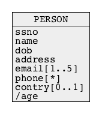

Database Design Quality
Outline
Why not ONE BIG TABLE !?
- Let us consider the following database domain:
- A customer is described by a unique customer number, first and last name
- Customers submit orders
- An order is described by a unique order number and order date
- Orders consist of lines
- A line contains information about a name of ordered item, price per single item and total number of ordered items
Why not ONE BIG TABLE !?
- Logical design provides the following relational schemas:
CUSTOMER(cnumber, first-name, last-name) PRIMARY KEY = (cnumber)
ORDERS(onumber, odate, cnumber) PRIMARY KEY = (onumber) FOREIGN KEY = (cnumber) REFERENCES CUSTOMER(cnumber)
LINE(onumber, lnumber, item, price total) PRIMARY KEY = (onumber, lnumber) FOREIGN KEY = (onumber) REFERENCES ORDERS(onumber)
CUSTOMER(cnumber, first-name, last-name, onumber, odate, cnumber,
onumber, lnumber, item, price total)
PRIMARY KEY = (cnumber, onumber, lnumber)
Why not ONE BIG TABLE !?
- Insertion of information about one customer who submitted 2 orders, such that each order consists several lines reveals a problem !
+---------+-------+-------+---------+-------------+---------+-------+-------+-------+ | cnumber | fname | lname | onumber | odate | lnumber | item | price | total | +---------+-------+-------+---------+-------------+---------+-------+-------+-------+ | +----------------------+ +---------------+ | | | | | | | 7 | James | Bond | | | 7 | 2017-01-01| | 1 | bolt | 23.04 | 5 | | | 7 | James | Bond | | | 7 | 2017-01-01| | 2 | screw | 29.01 | 3 | | | 7 | James | Bond | | | 7 | 2017-01-01| | 3 | nut | 4.55 | 2 | | | | | | | +---------------+ | | | | | | | 7 | James | Bond | | | 8 | 2018-01-01| | 1 | bolt | 23.04 | 1 | | | 7 | James | Bond | | | 8 | 2018-01-01| | 2 | screw | 23.04 | 1 | | | 7 | James | Bond | | | 8 | 2018-01-01| | 3 | nut | 23.04 | 2 | | | 7 | James | Bond | | | 8 | 2018-01-01| | 4 | lock | 23.04 | 1 | | +----------------------+ +---------------+ | | | | | +---------+-------+-------+---------+-------------+---------+-------+-------+-------+
Why not ONE BIG TABLE !?
- A multitable design does not have such a problem:
CUSTOMER(cnumber, first-name, last-name) PRIMARY KEY = (cnumber)
+---------+-------+-------+ | cnumber | fname | lname | +---------+-------+-------+ | 7 | James | Bond | +---------+-------+-------+
ORDERS(onumber, odate, cnumber) PRIMARY KEY = (onumber) FOREIGN KEY = (cnaumber) REFERENCES CUSTOMER(cnumber)
+---------+------------+---------+ | onumber | odate | cnumber | +---------+------------+---------+ | 7 | 2017-01-01 | 7 | | 8 | 2018-01-01 | 7 | +---------+------------+---------+
Why not ONE BIG TABLE !?
- A multitable design does not have such a problem:
LINE(onumber, lnumber, item, price total) PRIMARY KEY = (onumber, lnumber) FOREIGN KEY = (onumber) REFERENCES ORDERS(onumber)
+---------+---------+-------+-------+-------+ | onumber | lnumber | item | price | total | +---------+---------+-------+-------+-------+ | 7 | 1 | bolt | 23.04 | 5 | | 7 | 2 | screw | 29.01 | 3 | | 7 | 3 | nut | 4.55 | 2 | | 8 | 1 | bolt | 23.04 | 1 | | 8 | 2 | screw | 23.04 | 1 | | 8 | 3 | nut | 23.04 | 2 | | 8 | 4 | lock | 23.04 | 1 | +---------+---------+-------+-------+-------+
Database Design Quality
Outline
Where is a problem ?
- Why do we get redundancies in an incorrectly designed relational table ?
- Data dependencies:
- If COLUMN_1 is green then COLUMN_2 is red
- If COLUMN_1 is blue then COLUMN_2 is yellow
- If COLUMN_1 is orange then COLUMN_2 is red
- For any colour x if COLUMN_1 is x then COLUMN_2 is y

Where is a problem ?
- Data dependencies can be represented as a separate relational table ...
- ... and COLUMN_2 can be removed from the original table


Where is a problem ?
- Do data dependencies exist in BIG TABLE ?
+---------+-------+-------+---------+-------------+---------+-------+-------+-------+ | cnumber | fname | lname | onumber | odate | lnumber | item | price | total | +---------+-------+-------+---------+-------------+---------+-------+-------+-------+ | +----------------------+ +---------------+ | | | | | | | 7 | James | Bond | | | 7 | 2017-01-01| | 1 | bolt | 23.04 | 5 | | | 7 | James | Bond | | | 7 | 2017-01-01| | 2 | screw | 29.01 | 3 | | | 7 | James | Bond | | | 7 | 2017-01-01| | 3 | nut | 4.55 | 2 | | | | | | | +---------------+ | | | | | | | 7 | James | Bond | | | 8 | 2018-01-01| | 1 | bolt | 23.04 | 1 | | | 7 | James | Bond | | | 8 | 2018-01-01| | 2 | screw | 23.04 | 1 | | | 7 | James | Bond | | | 8 | 2018-01-01| | 3 | nut | 23.04 | 2 | | | 7 | James | Bond | | | 8 | 2018-01-01| | 4 | lock | 23.04 | 1 | | +----------------------+ +---------------+ | | | | | +---------+-------+-------+---------+-------------+---------+-------+-------+-------+
- If cnumber = 7 then fname = James
- If cnumber = 7 then lname = Bond
- For any customer number x if cnumber = x then fname = y and lname = z
Where is a problem ?
- Do data dependencies exist in BIG TABLE ?
+---------+-------+-------+---------+-------------+---------+-------+-------+-------+ | cnumber | fname | lname | onumber | odate | lnumber | item | price | total | +---------+-------+-------+---------+-------------+---------+-------+-------+-------+ | +----------------------+ +---------------+ | | | | | | | 7 | James | Bond | | | 7 | 2017-01-01| | 1 | bolt | 23.04 | 5 | | | 7 | James | Bond | | | 7 | 2017-01-01| | 2 | screw | 29.01 | 3 | | | 7 | James | Bond | | | 7 | 2017-01-01| | 3 | nut | 4.55 | 2 | | | | | | | +---------------+ | | | | | | | 7 | James | Bond | | | 8 | 2018-01-01| | 1 | bolt | 23.04 | 1 | | | 7 | James | Bond | | | 8 | 2018-01-01| | 2 | screw | 23.04 | 1 | | | 7 | James | Bond | | | 8 | 2018-01-01| | 3 | nut | 23.04 | 2 | | | 7 | James | Bond | | | 8 | 2018-01-01| | 4 | lock | 23.04 | 1 | | +----------------------+ +---------------+ | | | | | +---------+-------+-------+---------+-------------+---------+-------+-------+-------+
- If onumber = 7 then odate = 2017-01-01
- If onumber = 8 then odate = 2018-01-01
- For any order number x if onumber = x then odate = y
Database Design Quality
Outline
Insertion test
- How to verify if a relational schema is designed in a correct way ?
- Simple ! We try to insert few rows to create the redundancies
- For example, we insert few rows into a relational table ROOM
ROOM(bldgnum, name, roomnum, area) PRIMARY KEY = (bldgnum, roomnum)
+---------+----------+---------+------+ | bldgnum | bldgname | roomnum | area | +---------+----------+---------+------+ | 3 | SCIT | 210 | 20 | +---------+----------+---------+------+
+---------+----------+---------+------+ | bldgnum | bldgname | roomnum | area | +---------+----------+---------+------+ | 3 | SCIT | 210 | 20 | | 3 | SCIT | 211 | 22 | +---------+----------+---------+------+
+---------+----------+---------+------+ | bldgnum | bldgname | roomnum | area | +---------+----------+---------+------+ | 3 | SCIT | 210 | 20 | | 3 | SCIT | 211 | 22 | | 3 | SCIT | 213 | 20 | +---------+----------+---------+------+
Insertion test
+---------+----------+---------+------+ | bldgnum | bldgname | roomnum | area | +---------+----------+---------+------+ | 3 | SCIT | 210 | 20 | | 3 | SCIT | 211 | 22 | | 3 | SCIT | 213 | 20 | +---------+----------+---------+------+
- Problems:
- It is clearly visible that a building name is repeated as many times as many rooms are included in a building
Insertion test
- In another example, we insert few rows into a relational table WAREHOUSE
WAREHOUSE(name, address, part, quantity) PRIMARY KEY = (name, part)
+--------------+-----------------+-------+----------+ | name | address | part | quantity | +--------------+-----------------+-------+----------+ | Golden Bolts | Northfields Ave | bolt | 210 | +--------------+-----------------+-------+----------+
+--------------+-----------------+-------+----------+ | name | address | part | quantity | +--------------+-----------------+-------+----------+ | Golden Bolts | Northfields Ave | bolt | 210 | | Golden Bolts | Northfields Ave | lock | 20 | +--------------+-----------------+-------+----------+
+--------------+-----------------+-------+----------+ | name | address | part | quantity | +--------------+-----------------+-------+----------+ | Golden Bolts | Northfields Ave | bolt | 210 | | Golden Bolts | Northfields Ave | lock | 20 | | Golden Bolts | Northfileds Ave | screw | 211 | +--------------+-----------------+-------+----------+
Insertion test
+--------------+-----------------+-------+----------+ | name | address | part | quantity | +--------------+-----------------+-------+----------+ | Golden Bolts | Northfields Ave | bolt | 210 | | Golden Bolts | Northfields Ave | lock | 20 | | Golden Bolts | Northfileds Ave | screw | 211 | +--------------+-----------------+-------+----------+
- Problems:
- An address of a warehouse is repeated as many times as many different parts are stored in the warehouse
- If at some point in time, there are no parts stored in a warehouse then there may be no rows to keep a warehouse address or the values of certain attributes must be set to NULL
Insertion test
- In yet another example, we insert few rows into a relational table EMPLOYEE
EMPLOYEE(enum, skill, hobby) PRIMARY KEY = (enum, skill, hobby)
+------+-------------+----------+ | enum | skill | hobby | +------+-------------+----------+ | 7 | cooking | hiking | +------+-------------+----------+
+------+-------------+----------+ | enum | skill | hobby | +------+-------------+----------+ | 7 | cooking | hiking | | 7 | cooking | swimming | +------+-------------+----------+
+------+-------------+----------+ | enum | skill | hobby | +------+-------------+----------+ | 7 | cooking | hiking | | 7 | cooking | swimming | | 7 | programming | hiking | | 7 | programming | swimming | +------+-------------+----------+
Insertion test
+------+-------------+----------+ | enum | skill | hobby | +------+-------------+----------+ | 7 | cooking | hiking | | 7 | cooking | swimming | | 7 | programming | hiking | | 7 | programming | swimming | +------+-------------+----------+
- Problems:
- A skill name must be repeated with each hobby name
- A hobby name must be repeated with each skill name
- If at some point in time an employee has no hobbies (or skills) then a value of an attribute hobby (or skill) must be set to NULL, however, it is impossible due to PRIMARY KEY = (enum, skill, hobby) constraint
Database Design Quality
Outline
Good design guidelines
- Design a relational table such that it is easy to explain its meaning
- Do not include the unrelated attributes into the same table
- Design a relational table such that the insertion, deletion and update tests do not cause anomalies
- Minimize the total number of attributes whose values can be missing (NULL)
- Design the relational tables such that they can be joined over an equality conditions on the attributes that are either primary or foreign keys in a way that creates no spurious rows
- And the first of all ...
- ALWAYS START YOUR DESIGN FROM THE CONCEPTUAL MODELING !
References
- T. Connoly, C. Begg, Database Systems, A Practical Approach to Design, Implementation and Management, Chapters 14.1 - 14.3 Introduction to normalization, Pearson Education Ltd, 2015